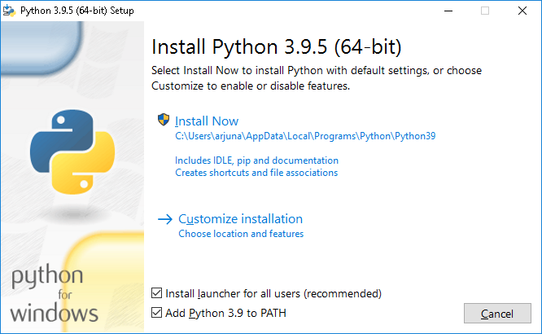
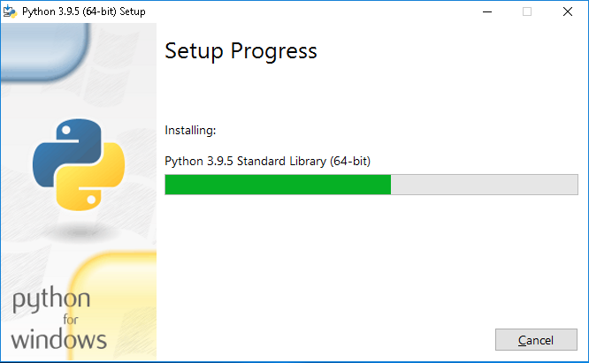
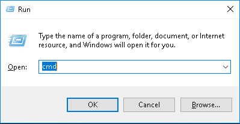

*Theme settings will be saved for
your next visit
Hallo teman-teman!!
Artikel kali ini menjelaskan cara Instalasi Python
berdasarkan pengalaman saya pribadi.
Untuk Python2 bisa didownload melalui link dibawah ini:
Windows 64-bit
| Windows 32-bit
Untuk Python3 bisa didownload melalui link dibawah ini:
Windows 64-bit
| Windows 32-bit
Setelah teman-teman download file Pythonnya, langsung saja jalankan installernya.
Disini saya menginstal Python3, dibagian bawah jangan lupa di checklist
"Install launcher for all users" dan "Add Python to PATH" kemudian klik
"Install Now".

Selanjutnya proses instalasi akan segera dimulai, tunggu sampai proses instalasi
selesai.

Akan muncul tampilan "Setup was successful", itu artinya proses
instalasi Python telah berhasil. Klik "Disable path length limit"
agar python dapat menggunakan alamat PATH yang melebihi 260 karakter.

Kemudian teman-teman buka Command Prompt dengan cara menekan tombol + R
pada keyboard teman-teman, lalu ketik cmd.

Setelah muncul jendela terminal Command Prompt, ketik python -V
Lalu akan muncul versi dari python yang teman-teman install

Selanjutnya teman-teman install GitBash agar lebih mudah dalam bekerja menggunakan python,
teman-teman bisa download melalui link dibawah ini:
Windows 64-bit
| Windows 32-bit
Untuk versi Git terbaru teman-teman bisa kunjungi link ini.